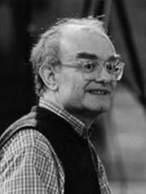

 John Rutter werd in 1945 geboren te Londen en kreeg zijn eerste muzikale opleiding in koorzang op de Highgate School. Hij studeerde muziek op het Clare College te Cambridge, alwaar hij zijn eerste gepubliceerde composities schreef en zijn eerste opnamen dirigeerde, reeds voordat hij zijn opleiding had voltooid. Zijn oeuvre omvat zowel vele grote als kleine koorwerken, verschillende orkestrale en instrumentale werken, een pianoconcert, twee kinderopera’s en speciale composities voor groepen als The Philip Jones Brass Ensemble en The King Singers.
Van 1975 tot 1979 was hij muzikaal leider van het Clare College. Hij leidde het koor van dit college bij een aantal televisie uitzendingen en opnamen. In 1981 richtte hij de Cambridge Singers op, een professioneel koor, speciaal bedoeld voor het opnemen van nieuwe composities.
In 1984 richtte John Rutter zijn eigen platenlabel op, Collegium. Hiermee wilde hij de koormuziek bij een groter publiek brengen, door muziek van de hoogst mogelijke kwaliteit te leveren. Het label liep erg goed. Er was een veel groter wereldwijd publiek voor deze muziek dan ze ooit hadden kunnen denken.
Zijn Requiem en het Magnificat zijn vele malen uitgevoerd in Engeland en de Verenigde Staten en behoren inmiddels tot het bekende koorrepertoire. Tegenwoordig verdeelt Rutter zijn tijd tussen het componeren en het dirigeren. Hij is een veelgevraagd gastdirigent en verzorgt regelmatig lezingen in Europa en Amerika.